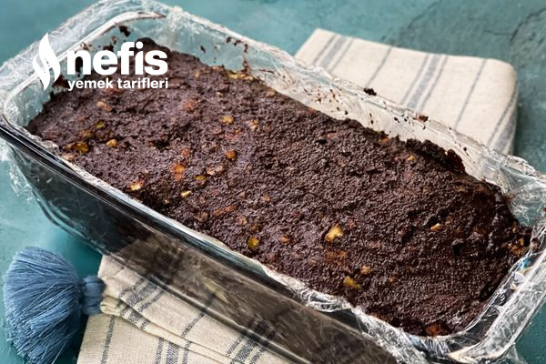
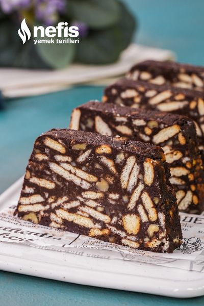

Mozaik Pasta Tarifi
Anasayfa
Portföy
Yemek Tarifleri
Mozaik Pasta Tarifi İçin Malzemeler
- 300 gr petibör bisküvi
- 100 gr eritilmiş margarin ya da tereyağı
- 1 çay bardağı ceviz kırığı
- 1 su bardağı süt (200 ml)
- Yarım su bardağı toz şeker
- 3 yemek kaşığı kakao
- Öncelikle bisküvileri kırarak küçük parçalara ayırın fakat ufalamayın. 4 parçaya ayırmanız yeterli olacaktır. Kırdığınız bisküvileri bir kaba alın.
- Ayrı bir kap içerisine eritilmiş tereyağı, süt, şeker ve kakaoyu güzelce karıştırın.
- Bu karışıma bisküvi parçalarını da ekleyerek bisküviler iyice sosa bulanana kadar karıştırın.
- Ceviz kırığını da ekleyerek karıştırmaya devam edin.
- Karışımı streç filmle kapladığımız borcama boşaltalım ve üzerine spatula ile bastırarak iyice kaba yerleştirin.
- Üzerini de streç film ile kapattıktan sonra derin dondurucuya kaldırın. Dondurucuda 2 saat beklettikten sonra servis yapabilirsiniz. Afiyet olsun!
Mozaik Pasta Tarifi Fotoğraflı Yapılışı

